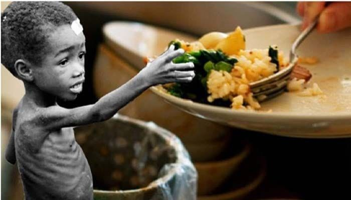
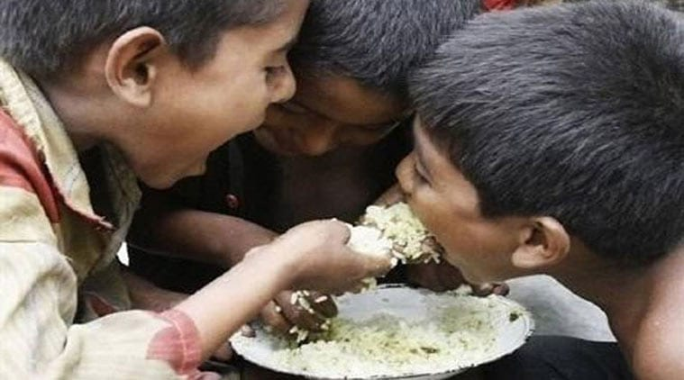
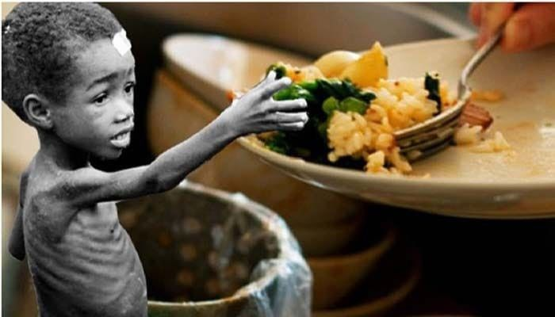
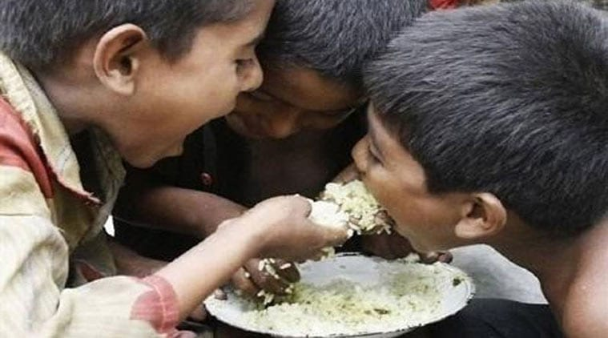
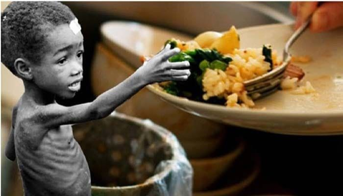
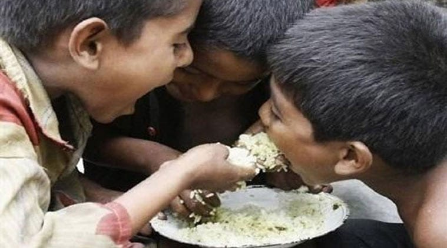

Food Bridge
Connecting surplus to smiles


Connecting surplus to smiles
Hunger kills more people each year than AIDS, malaria and terrorism combined
One-third of the food produced around the world is never consumed
850 million hungry people in the world
Every 10 seconds, a child dies from hunger
82% of hungry people live in countries with food surpluses, not food shortages
One in every eight people sleeps hungry each night
Our initiative is dedicated to bridging the gap between surplus food and underprivileged communities in need. Every day, hotels, large events, and restaurants generate significant amounts of excess food—food that is perfectly edible but often goes to waste. At the same time, countless individuals struggle with food insecurity, lacking access to nutritious meals.
This initiative not only reduces food waste but also fosters a culture of social responsibility, ensuring that no good food goes unused while addressing the urgent issue of hunger. By leveraging technology, logistics, and community partnerships, we aim to make a tangible impact—one meal at a time.
Together, we can create a world where surplus food serves a greater purpose, ensuring that abundance is shared, and no one goes hungry.
Support our mission through donations and help feed those in need.
DONATE NOW!If you manage a restaurant or generally have a large amount of leftover food. Let’s connect and save food together!
Connect with us so we can make sure your leftovers reach the right place, to the people in need.
All we need is a regular contribution from your firm to make a real impact.
Join UsIdentify surplus food from events, hotels, or restaurants and set it aside for donation.
Connect with our team to schedule safe pickup and redistribution to those in need.
Help reduce food waste while providing meals to underserved communities. Join us in turning surplus into sustenance!
Join Us